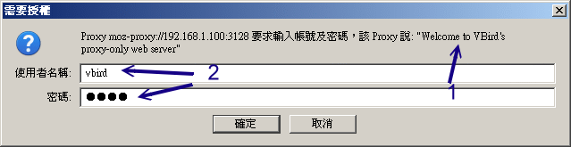
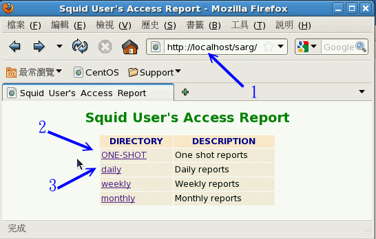
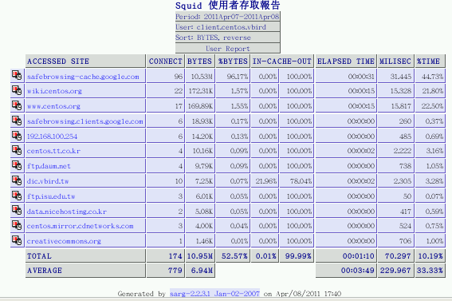

17.4 服务器的其他应用设定
除了基本的 proxy 设定之外，如果你还有其他可供利用的上层代理服务器，说不定我们就能够设计一下如何进行分流的动作了！ 此外，如果针对信任用户来说，难道得要一直使用 acl 直接指定用户来源然后再用 http_access 放行？有没有认证功能啊？ 这样就不用一直修改设定啊！这些其它的应用设定在这个小节来谈谈吧！
17.4.1 上层 Proxy 与获取数据分流的设定
能够找到的上层 proxy 服务器我们在 17.1.3 里面谈过了，你可以重新回去瞧瞧。 不过，假设你所在的环境并没有上层代理服务器，但是你有两部 Linux 主机放置在不同的 ISP 环境下， 这两个 ISP 对某些国外的带宽流量不同，所以你想要根据这样的情况来设计一下获取 WWW 网页的分流时，可以怎么做？ 我们举个例子来说好了：
- hinet.centos.vbird：这部主机位于 hinet 这个 ISP 底下，对大陆 (.cn) 的流量比较高，作为上层代理服务器之用；
- www.centos.vbird：这部主机位于学术网络 (昆山科大)，因为对大陆带宽被限制，因此浏览速度相对较慢。
现在我们规划 hinet.centos.vbird 是上层代理服务器，因此这部主机得要开放 www.centos.vbird 这部机器的使用权， 这动作包括： (1)利用 acl srcdomian 等方式放行 www.centos.vbird 的使用权； (2)开放 www.centos.vbird 的 port 3128 的防火墙过滤功能。如此一来，我们这部 www.centos.vbird 才能够使用上层代理服务器喔！也就是说，这两部主机都要是你能够掌握的才行 (至少也要上层 ISP 能够替你开放使用权啦)。
那么 www.centos.vbird 要如何设定呢？基本上，设定上层代理服务器与分流的参数主要有： cache_peer, cache_peer_domain, cache_peer_access 等，分别说明语法如下：
- cache_peer 的相关语法
cache_peer [上层proxy主机名] [proxy角色] [proxy port] [icp port] [额外参数]
这个设定值就是在规范上层代理服务器在哪里，以及我们想要对这部代理服务器如何查询的相关设定值。
- 上层 proxy 主机名：例如本案例中就是 hinet.centos.vbird 这一部啰；
- proxy 角色：这部 proxy 是我们的上层 (parent) ？还是作为我们邻近 (sibling) 的协力运作的 proxy ？ 因为我们要利用上层去捉取数据，因此经常使用的是 parent 这个角色值；
- proxy port：通常就是 3128 嘛！
- icp port：通常就是 3130 嘛！
额外参数：针对这部上层 proxy 我们想要对它进行的查询数据的行为设定。主要有：
- proxy-only：向上层 proxy 要到的数据不会快取到本地的 proxy 服务器内，降低本地 proxy 负担；
- wieght=n：权重的意思，因为我们可以指定多部上层 Proxy 主机，哪一部最重要？就可以利用这个 weight 来设定，n 越大表示这部 Proxy 越重要
- no-query：如果向上层 Proxy 要求资料时，可以不需要发送 icp 封包，以降低主机的负担
- no-digest：表示不向附近主机要求建立 digest 纪录表格
- no-netdb-exchange：表示不向附近的 Proxy 主机送出 imcp 的封包要求
cache_peer_domain 的相关语法
cache_peer_domain [上层proxy主机名] [要求的领域名]
这个设定值的意思是说，你想要使用这部上层代理服务器向哪个领域名要求数据。
- cache_peer_access 的相关语法
cache_peer_access [上层proxy主机名] [allow|deny] [acl名称]
与 cache_peer_domain 相当类似，只是 cache_peer_domain 直接规范了主机名 (domain name)， 而如果你想要设计的并非领域名，而是某些特定的 IP 网段时，就得要先用 acl 设计一个名称后， 再以这个 cache_peer_access 去放行 (allow) 或拒绝 (deny) 读取了。
根据上述的语法说明，那么我们想要达到 .cn 使用 hinet.centos.vbird 这部服务器的代理功能时， 应该要这样设计的：
[root@www ~]# vim /etc/squid/squid.conf
cache_peer hinet.centos.vbird parent 3128 3130 proxy-only no-query no-digest
cache_peer_domain hinet.centos.vbird .cn
[root@www ~]# /etc/init.d/squid reload
如果你还有其它的需求再利用 acl 规范了目标位置后，再以 cache_peer_access 去放行吧！ 如此一来，你的 proxy server 就是一部会主动的依据不同的要求向不同的上层服务器求取数据的聪明 proxy 啰！
17.4.2 Proxy 服务放在 NAT 服务器上：通透式代理 (Transparent Proxy)
从上面的说法来看，我们可以发现 proxy 可以做到类似防火墙的功能 (acl dst, acl dstdomain 再配合 http_access 处理)， 但是，我们也知道浏览器得要设定好 proxy 之后，才会真的使用 proxy 嘛！那就不就是在耍宝用的防火墙吗？ 只要你的用户知道不要设定 proxy 就可以躲过你的管控，那这部 proxy 防火墙有啥屁用啊？您说是吧？
那该如何强制使用者一定要使用你的 proxy 呢？很简单！那就是： (1)在对外的防火墙服务器 (NAT) 上面安装 proxy； (2)在 proxy 上头启动 transparent 功能； (3) NAT 服务器加上一条 port 80 转 port 3128 的规则，如此一来，所有往 port 80 的封包就会被你的 NAT 转向 port 3128 ， 而你的 port 3128 就是 proxy ，那大家就得要用你的 proxy ，而且重点是，浏览器不需要进行任何设定！
呵呵！也就是说，当使用者是经过 NAT 服务器联机出去时，只要让 NAT 服务器发现『咦！你是要去捉 WWW 的资料对吧！好！那么这个动作由 Proxy 服务帮你搞定！』如此一来，使用者根本就不需要在浏览器上面设定 Proxy 的相关数据，因为这个动作是『由 NAT 服务器自己决定的』，所以只要在 NAT 服务器上面设定妥当即可，使用者不必设定任何数据呢！呵呵！真是不错！而且进行的动作非常简单！
# 1\. 设定 proxy 成为通透式代理服务器的功能！
[root@www ~]# vim /etc/squid/squid.conf
http_port 3128 transparent
# 找到 3128 这行后，在最后面加上 transparent 即可
[root@www ~]# /etc/init.d/squid reload
接下来，将来自 192.168.100.0/24 这个内网的来源，只要是要求 port 80 的，就将它重新导向 port 3128 的方式为：
[root@www ~]# vim /usr/local/virus/iptables/iptables.rule
iptables -t nat -A PREROUTING -i $INIF -s 192.168.100.0/24 -p tcp \
--dport 80 -j REDIRECT --to-ports 3128
# 将上述这一行加在最底下 /etc/init.d/iptables save 的上面一行即可！
[root@www ~]# /usr/local/virus/iptables/iptables.rule
这样就结束啦！很简单吧！通常这样的环境相当适合学校内的教室或者是计中的环境， 因为这样学校内部根本不需要请学生设定浏览器的 proxy 功能，立刻就能够达到我们所需要的管控能力！很棒吧！ 不过，虽然这样的功能已经很棒了，但是鸟哥实际用在学校教室环境中却发现了一些问题， 那就是很多同学同时上传同一个档案到外部服务器去，因为 proxy 快取的功能，结果让学生一直取得旧的档案， 对于教网页制作的老师来说，很困扰～因为教学过程中常常需要上传最新的网页嘛！但是 proxy 快取住， 所以却得到错误的数据了～那怎办？
- 仅具有 proxy 无快取功能的代理
既然我们这个 transparent proxy 的目的仅是在进行控管，并不要去处理快取的任务 (因为带宽假设是够的)， 那么干脆就不要快取啦！这样不就 OK 啦？好吧！那我们就来搭配 transparent 进行这个设定看看。 假设 transparent proxy 已经设定妥当，那么接下来就是让你的快取目录空空如也，且再也不写入任何资料。 此外，也不要有多余的内存来记录热门档案啦！
# 先关闭 squid ，然后删除快取目录，之后再重建快取目录，此时快取目录就空了
[root@www ~]# /etc/init.d/squid stop
[root@www ~]# rm -rf /var/spool/squid/*
[root@www ~]# vim /etc/squid/squid.conf
cache_dir ufs /var/spool/squid 100 16 256 <u>read-only</u>
#cache_dir ufs /srv/squid 2000 16 256
# 额外的那个 /srv/squid 批注掉，然后第一行多个 read-only 字样！
cache_mem 0 MB
# 本来规范有 32MB ，现在不要了！
[root@www ~]# /etc/init.d/squid start
如此一来，这部 proxy 就再也没有快取了，全部资料都得要自己向外头捉取！就不会有旧数据重复出现的问题～
17.4.3 Proxy 的认证设定
既然 proxy 有许多功用，包括分流的功能，很不赖啊！但是，由于网络闲人越来越多，因此 proxy 不可以设计为 open proxy ！亦即是不能够开放所有的人使用你的 proxy 啦！所以，一般来说， proxy 只会开放内部网域的人们来使用而已。 问题是，如果我在 Internet 也想要使用这部自己架设的 proxy 时，该如何是好？还得要再次的修改 squid.conf 吗？ 有没有这么麻烦？
没关系啦！为了这个问题， squid 官方软件已经给予了认证的设定功能！意即我们可以透过认证来简单的输入账号密码， 若通过验证，就可以立刻使用我们的 proxy 了！这样就好多啦！那如何达成呢？其实 squid 提供很多认证功能， 我们需要的是最简单的功能即可。使用的是 squid 主动提供的 ncsa_auth 认证模块，这个模块会利用 apache (WWW 服务器) 提供的帐密建立指令 (htpasswd) 所制作的密码文件作为验证依据。所以，我们至少需要检查有没有这两样东西：
[root@www ~]# rpm -ql squid | grep ncsa
/usr/lib64/squid/ncsa_auth <==有的！就是这个验证模块档案！注意完整路径
/usr/share/man/man8/ncsa_auth.8.gz
[root@www ~]# yum install httpd <==apache 软件安装
[root@www ~]# rpm -ql httpd | grep htpasswd
/usr/bin/htpasswd <==就是需要这个帐密建立指令！
/usr/share/man/man1/htpasswd.1.gz
这样的事前准备就差不多了。让我们来考虑一个案例好了：
- 内部网域 192.168.100.0/24 要使用 proxy 的，还是不需要透过验证；
- 外部主机想要使用 proxy (例如 192.168.1.0/24 这段) 才需要验证；
- 使用 NCSA 的基本身份验证方式，且密码文件建立在 /etc/squid/squid_user.txt
- 上述档案仅有一个用户 vbird ，他的密码为 1234
那该如何处理呢？开始来一步一步进行吧：
# 1\. 先修改 squid.conf 档案内容
[root@www ~]# vim /etc/squid/squid.conf
# 1.1 先设定验证相关的参数
auth_param basic program /usr/lib64/squid/ncsa_auth /etc/squid/squid_user.txt
auth_param basic children 5
auth_param basic realm Welcome to VBird's proxy-only web server
# 非特殊字体为关键词不可更动，第一行为透过 ncsa_auth 读取 squid_user.txt 密码
# 第二行为启动 5 个程序 (squid 的子程序) 来管理验证的需求；
# 第三行为验证时，显示给用户看的欢迎讯息，这三行可写在最上面！
# 1.2 然后是针对验证功能放行与否的 acl 与 http_access 设定
acl vbirdlan src 192.168.100.0/24 <==修改一下，取消 192.168.1.0/24
acl dropdomain dstdomain "/etc/squid/dropdomain.txt"
acl dropsex urlpath_regex /sexy.*jpg$
acl squid_user proxy_auth REQUIRED <==建立一个需验证的 acl 名称
http_access deny dropdomain
http_access deny dropsex
http_access allow vbirdlan
http_access allow squid_user <==请注意这样的规则顺序喔！验证在最后
# 2\. 建立密码数据
[root@www ~]# htpasswd -c /etc/squid/squid_user.txt vbird
New password:
Re-type new password:
Adding password for user vbird
# 第一次建立才需要加上 -c 的参数，否则不需要加上 -c 喔！
[root@www ~]# cat /etc/squid/squid_user.txt
vbird:vRC9ie/4E21c. <==这就是用户与密码啰！
[root@www ~]# /etc/init.d/squid restart
比较需要注意『acl squid_user proxy_auth REQUIRED』这一串设定，proxy_auth 是关键词，而 REQUIRED 则是指定任何在密码文件内的用户都能够使用验证的意思。如果一切顺利的话，那么你的内网依旧可以使用 transparent proxy ， 而外网则需要输入账密才能够使用 proxy server 提供的代理能力。至于验证的过程有点像这样：
 图 17.4-1、使用 proxy 需验证的示意图
上图中箭头 1 为刚刚你设定的 real 内容，而帐密则是你用 htpasswd 所建立的数据啦！另外，既然已经加上了验证功能， 那么你可能得要将防火墙开放 port 3128 对全世界监听的过滤才行呦！防火墙还是不要忘记了！ ^_^
17.4.4 末端登录档分析： sarg
事实上， squid 已经收集了众多的登录文件分析软件了，而且大多是免费的 (http://www.squid-cache.org/Scripts/) ，你可以依照自己的喜好来加以安装与分析你的 squid 登录档喔！鸟哥这里仅介绍一套相当强的分析软件， 那就是 sarg。
Squid Analysis Report Generator (Squid 分析报告制作者)，他的官方网站在： http://sarg.sourceforge.net/sarg.php，他的原理相当的简单，就是将 logfile 拿出来，然后进行一下解析，依据不同的时间、网站、与热门网站等等来进行数据的输出， 由于输出的结果实在是太详细了！所以...呵呵！如果你是老板的话，用这个软件会让你『爱不释手』啊！ 因为每个人的每个小动作都会被记录下来，我的天吶！当我第一次看到这个分析的画面时，真的给他吓了老大一跳得说～因为连每个 IP 在『每个小时所连上的每个网站数据』都有纪录～～害怕了吧～
不过，有优点就有缺点啦！怎么说呢？因为 SARG 功能太强大了，所以记录的『数据量』就实在是多了点，如果你的 Proxy 网站属于那种很大流量的网站时，那么就不要使用『日报表』，也就是每天产生一份报表的那种方式！ 那么由于数据一天可能会有几 MB 的数据，一两个月还没有关系，如果记录了几年，那么光是这些记录就会花掉好几 GB 的硬盘空间了～此外，也可以使用『覆盖旧有数据』的方式不要留存旧数据，这样也可以节省硬盘的空间啦！
在 SARG 的官网上面已经有朋友替大家将 RPM 的档案制作出来了，你可以参考：http://packages.sw.be/sarg/ 网站内的档案。由于鸟哥用的是 CentOS 6.x 64 位版本，但截至本日为止 (2011/08) 这个网站尚未释出稳定的 CentOS 6 版本，因此鸟哥下载的是 sarg-2.2.3.1-1.el5.rf.x86_64.rpm 这个版本。你可以使用 wget 下载到 /root 底下，再用 rpm -ivh 去安装起来即可。 这个软件默认会将 /var/www/sarg 作为输出报表的目标，而且你必须要安装与启动 WWW 服务器， 至于网址列则是： http://your.hostname/sarg 去查阅。底下让我们来处理 sarg 的配置文件吧！
[root@www ~]# yum install gd
[root@www ~]# rpm -ivh sarg-2.2.3.1-1.el5.rf.x86_64.rpm
[root@www ~]# vim /etc/sarg/sarg.conf
title "Squid 使用者存取报告" <==第 49 行左右
font_size 12px <==第 69 行左右
charset UTF-8 <==第 353 行左右
# 1\. 一口气制作所有登录文件内的数据报表
[root@www ~]# sarg
SARG: Records in file: 2285, reading: 100.00% <==列出分析信息
# 2\. 制作 8 月 2 日的报表
[root@www ~]# sarg -d 02/08/2011
# 这两个范例，都会将数据丢到 /var/www/sarg/ONE-SHOT/ 底下去；
# 3\. 制作昨天的报表
[root@www ~]# sh /etc/cron.daily/sarg
# 这个范例则是将每天的数据放置于 /var/www/sarg/daily/ 底下去！
如果制作好相关数据，由于 sarg 这个 RPM 档案已经帮我们设定好了每日、每周、每月进行一次执行， 所以你可以不用管怎么执行啦！非常的方便！如果想要查阅数据，只要在 proxy server 端输入 http://your.hostname/sarg 会看到如下画面：
 图 17.4-2、sarg 报表观察示意图
如上所示，在网址列输入服务器本机的咚咚，然后会看到几个连结。与我们有关的是 ONE-SHOT 以及 daily 两个， 我们来瞧瞧 ONE-SHOT (箭头 2 所指) 里面有啥咚咚？按下去会看到下图：
 图 17.4-3、sarg 报表观察示意图
图 17.4-3、sarg 报表观察示意图
如上图所示，因为我们刚刚测试执行过两次 sarg 的指令，所以这里会有两个时间的连结。我们先看看总和数据， 亦即图中箭头所指的地方，会出现下图的说明：
 图 17.4-4、sarg 报表观察示意图
图 17.4-4、sarg 报表观察示意图
在该段时间内，共有三个用户在存取，我们来瞧瞧 client.centos.vbird 到底干了啥事吧！
 图 17.4-5、sarg 报表观察示意图
看到没有，这个用户在这段时间进行过的联机通通在里面！有没有很清晰呢？